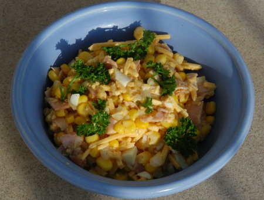

| Zutaten für 4 Personen: | |
| 200 g | Maiskörner |
| 100 g | Käse |
| 100 g | Schinken in Streifen |
| Zwiebel | |
| Petersilie | |
| Sauce: | |
| Sonnenblumenöl | |
| Rotweinessig | |
| Senf | |
| wenig | Worcestershiresauce |
| fein gehacktes gekochtes Ei | |
| Salz | |
| Pfeffer | |
| etwas | Currypulver |
Sauce zusammen rühren und die Maiskörner, den Käse, den Schinken, die Zwiebel darunter mischen. Mit Petersilie garnieren.
Packungsbeilage zu Maiskolben.
Am 18.3.205 zubereitet. Sehr einfach und schmackhaft. RE
@LINKBACK_TAG@ @WAKELOCK@